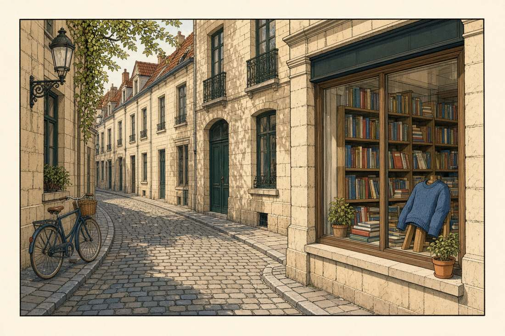

On your computer · not published · Brussels 1929–1983
The boy who went to look, and the line that had to learn what looking costs.
This is a companion to Hergé’s Tintin, not a substitute for it. Every finished album is here, and the pencil of the one he did not finish. So are the lives around the albums: the captain who arrives already ruined, the professor who hears the wrong century, the friend from Shanghai who taught the author that a country is not a costume.
The early books are not protected by charm. Soviets is propaganda. Congo is a colonial text. The Shooting Star’s first edition contains an antisemitic caricature. The later books are the long argument with those facts — sometimes won, on a mountain, with no villain at all. Read in order once. The line changes its mind in public.
The plates were drawn for this atlas. They are not panels, scans, or official art. The essays are original criticism. Your reading marks and English scores stay in this file, on this computer.
Congo is on this list on purpose. A companion that only offers the moon is a souvenir, not a reading.
The canon
Twenty-four albums
Serial dates, not just the tidy year on the cover. Plot, how the page was made, and a reading of what the story believes. Two-parters are marked. The unfinished manuscript is last, and labelled as a manuscript.
Original plate, not a panel from the book. The first adventure begins as a departure — and as propaganda drawn from a single pamphlet.
Setting
Brussels to a cartoon Soviet Union
Publication
Le Petit Vingtième, from 10 January 1929. Black-and-white album 1930. Hergé never redrew it. A colour edition appeared only in 2017, from the studio, not from his hand.
Themes
PropagandaOriginsPolitics
Plot
The boy reporter Tintin and his dog Snowy are sent east by a Brussels paper to show readers what the Bolsheviks are “really” like. There is no investigation. There is a chase. He is imprisoned, escapes by daring and luck, watches a rigged election in which the party candidate is the only one allowed to speak, and finds a Potemkin factory where the smoke is painted on and the foreign visitors are shown a shed of fake industrial glory. Grain is burned while people go hungry. Tintin steals a plane, wrecks it, steals another, and comes home a scout-hero to a crowd the paper itself had organised.
Nothing in the journey changes his mind, because the journey was never built to allow a mind to change. Every Russian official is a buffoon or a brute. Every escape proves the boy was right before he bought his ticket. The last image is triumph on a Brussels platform, not knowledge.
How it was made
Georges Remi was twenty-one, signing Hergé, and working for Abbé Norbert Wallez at the Catholic daily Le Vingtième Siècle. Wallez wanted a children’s supplement that would fight the left. Hergé later said he had been fed one book: Joseph Douillet’s Moscou sans voiles, an anti-communist tract by a former Belgian consul. From that single source he invented a country once a week, at speed, for the printer.
The drawing is not yet the clear line. It is newspaper cartooning: crowded, scratchy, funny in the way a chase is funny. He refused for decades to let the album back into print. Pirates circulated it. The official return, in the 1970s archives edition, was an act of history, not of pride.
What the story thinks
The philosophical problem is certainty. Tintin already has the shape he will keep for fifty years: no family, no surname, no private desire except the next fact, and a courage that does not calculate. In a good book that emptiness makes him a witness. Here it makes him a mouthpiece. A character who cannot be tempted cannot be wrong, and a character who cannot be wrong is not a reporter.
Read it as an origin, the way a biologist reads a fossil. You can see the future body — the boy, the dog, the train, the escape — and you can see the organ that is missing: doubt. Everything Hergé becomes is a long argument with this first assignment.
No scene from this album is illustrated here. It was drawn in Brussels, for a colonial newspaper, from ignorance. The desk is the honest picture.
Setting
The Belgian Congo, as a Brussels newsroom imagined it
Publication
Le Petit Vingtième, 1930–1931. Black-and-white album 1931. Colour redraw 1946, which prettified the line and left the politics standing.
Themes
ColonialismPropagandaOrigins
Plot
Tintin arrives in the colony as a celebrity. He hunts, he lectures, he is pushed into a local quarrel by a diamond-hungry American villain, and he is drawn as the man who brings order. Congolese people are staged as childlike extras who marvel at the white boy, speak in a fake pidgin, and exist to be taught, photographed, or rescued. Animals exist to be killed, including a set-piece in which big-game slaughter is the joke.
The plot machinery — a criminal, a chase, a speech to the crowd — is the same machine as the Soviet book, aimed at a different target. The colony is a playground. When Tintin leaves, the paper has its story: Belgium’s presence is a kindness, and the boy has proved it with his fists and his camera.
How it was made
Wallez and the colonial mood of the 1930 Belgian exhibitions asked for this book. Hergé had not been to Africa. He drew what the metropole already believed, which is what cliché is. In 1946 he redrew it in the clear line for the colour series: the pages became elegant, and the harm became easier to miss. Elegance is not a correction.
Late in life he called the album a sin of youth and said he had drawn Africans as the bourgeois Belgium of his childhood “saw” them. That sentence is an admission, not an absolution. He did not withdraw the book.
What the story thinks
The question the album forces is whether a style can be innocent. The clear line, which will later feel like an ethic of attention — every object outlined, nothing smudged — can also make a lie look calm and finished. Colonial looking is a way of not seeing. It decides in advance what a person is for.
A serious reader does not “balance” the hunting gags against the racism. The gags are part of the racism: they train a child to laugh at people and at killing. If the series matters, it matters partly because its author spent the rest of his life half-learning the lesson this book failed.
Original plate. The album’s America is a Brussels dream of gangsters, factories, and speed.
Setting
Chicago and a fantasised West
Publication
Le Petit Vingtième, 1931–1932. Colour redraw 1945.
Themes
PoliticsOriginsColonialism
Plot
Tintin steps off the boat into a Chicago run by gangsters. A crude version of Al Capone tries to have him killed; a slaughterhouse, a secret elevator, and a fall into the river follow with the logic of a serial, which is to say almost none. He then goes west. Native people are ambushed by the plot and by the pencil. Oil is discovered on their land and a city is hammered together overnight, a genuine flash of satire: capital does not explore a place, it replaces it. He also faces a mob that wants to lynch him. The law is a crowd.
Between the punches there is a real subject. America, for this young Belgian, is a machine that can build a town between lunch and dinner, can a product, and forget the people who were standing on the ground. The joke lands. Other jokes do not deserve to.
How it was made
Still a weekly strip, still no journey to the country drawn. Hergé is faster now, and some sequences — the city erected in hours, the tin of beef that is the whole West condensed — show the designer he is becoming. The 1945 colour version cleans faces and clothes and does not clean the imagination. He is between two ethics: he can see that industrial modernity is absurd, and he cannot yet see that his own types are a form of industry.
What the story thinks
Speed is the idea. If Soviets was about a lie told slowly to visitors, America is about a truth told too fast to stop: the world can be manufactured. Tintin, who believes in looking, is the wrong instrument for a country that packages looking into a tour. The philosophical comedy — a town born in an afternoon — is also a fear. What is a witness for, once the site has been paved?
Hold the satire and the stereotyping in the same hand. Praising the first while skipping the second is how the early books survived in polite company. The lynching scene, especially, shows a Europe already worried about American violence and already willing to draw Black Americans as props in that worry.
At sea, Tintin meets a film-maker called Rastapopoulos and an Egyptologist, Sophocles Sarcophagus. A sign — the mark of Kih-Oskh — leads into a pharaoh’s tomb, an empty sarcophagus, and a ring of opium smugglers whose tins and cigars carry the same brand. Tintin is entombed, escapes, crosses the desert, is thought mad, and washes up in the princely state of Gaipajama, where a fakir is poisoning the maharaja’s household into insanity. Two identical detectives, Thomson and Thompson, arrive and arrest the wrong man with perfect confidence.
The story does not really end. The trail of the cigar points further east, and the next album begins by closing this one’s last door. For the first time the series is a single river, not a lecture in a new country each year.
How it was made
This is the hinge before the hinge. Hergé is inventing the grammar he will use for decades: a small sign that recurs, a respectable man who is the crime, a pair of policemen who make order look foolish, and a geography of costumes. The 1955 redraw replaces the stiff 1930s figures with the mature line, so most readers meet a book that looks “classic” and is, in its bones, still an oriental tour. Egypt and India are stage sets. He has not yet met the person who will shame him out of stage sets.
What the story thinks
Identity starts to slip, which is the series’ real subject. People are not who they announce themselves to be. A director is not only a director. A tomb is a warehouse. Madness is a drug, not a destiny. Tintin still has no inner life, but the world around him has become double, and a double world is the beginning of thought.
The Thom(p)sons are a philosophical machine. They are the state as habit: two bodies, one error, infinite procedure. Their first appearance already asks a question Europe will need in the 1930s. What is an institution that cannot tell two hats apart, and insists that the difference is the point?
The fakir’s plot is broken in India, and a message carries Tintin to Shanghai. There the same opium ring wears a political face. Mitsuhirato, a Japanese agent, stages an attack that will justify intervention — Hergé’s version of the real incidents used to cover the invasion of China. Dawson, the police chief of the International Settlement, serves commerce rather than law. The poison of madness returns. So does Rastapopoulos, no longer a charming passenger but the international head of the trade.
The plot’s centre is not the villain. It is a boy. Tintin pulls a young Chinese stranger, Chang, from the water, and Chang pulls Tintin out of his European lines. They talk about what each has been told the other is like. The friendship is ordinary and, in this series, revolutionary. Tintin exposes the frame-up. A street and a ceremony wait at the end. Chang stays in China. The promise to meet again is the seed of Tintin in Tibet, a quarter of a century later.
How it was made
In 1934 Hergé was introduced to Zhang Chongren, a sculpture student at the Brussels academy, from Shanghai. Zhang taught him how a street actually looked, how a person actually stood, what the Japanese campaign meant to someone who was not reading it in a European paper. Hergé redrew. He wrote a dedication into the friendship. He also took a side, in a Catholic children’s supplement, against imperial Japan and against the Western concessions. Wallez’s project has escaped Wallez.
This is why the book feels different in the hand. Signs are researched. Crowds have individual faces. The joke is no longer “how strange they are.” The joke, when there is one, is how strange the European story was.
What the story thinks
Recognition is the whole ethic. Chang and Tintin each recite the nonsense they have heard about the other’s people, and the nonsense collapses because a person is in the room. That is a small scene and a complete theory of looking. You cannot draw justly what you have decided not to meet.
It is also a theory of empire. The International Settlement’s chief of police is the perfect figure of “neutral” Western order: he protects the trade, including the trade that eats the city. Hergé, who two albums ago had sent Tintin to improve the Congo, now draws the improver as the villain. A conscience is visible at the moment it turns. It does not turn all the way. It turns.
Original plate. Behind the idol and the opera-buffa generals is the oil politics of a real South American war.
Setting
Brussels, and the fictional republic of San Theodoros
Publication
Le Petit Vingtième, 1935–1937. Colour album 1943.
Themes
PoliticsMysteryColonialism
Plot
A museum fetish is stolen and replaced. Tintin follows it onto a ship and into San Theodoros, where General Alcazar and General Tapioca overthrow each other so regularly that revolution has become a calendar. Two European thieves, Alonso and Ramon, pursue a diamond hidden inside the idol. Oil companies pursue the border. A British explorer, Ridgewell, has gone to live with the Arumbaya and refuses the romance of being “rescued” back into Europe. The thieves end by killing each other, repeating a story told, at the start, as if it were only folklore.
The idol that returns to the vitrine is not the point. The point is the circle: a tale about greed, told as anthropology, comes true in suits and fedoras. The war that looks like a joke is being paid for like a business.
How it was made
Hergé folds in the Chaco War between Bolivia and Paraguay (1932–1935), a catastrophe in which oil concessions and national pride ate a generation. San Theodoros lets him show the mechanism without a lawyer’s letter. He is learning to hide a real war inside a lucid farce — the method of Ottokar’s Sceptre and, much later, Tintin and the Picaros. The Arumbaya sequences still use indigenous people as a colourful margin. Ridgewell is his attempt at a counter-figure: the European who stops explaining.
What the story thinks
Repetition is the moral. The same murder happens in the myth and in the plot, because greed is not original. Hergé is becoming a structural thinker: the panel at the end rhymes with the panel at the beginning, and the rhyme is the judgment. You do not need a sermon when the form closes.
There is a harder idea underneath the oil-company war. Patriotism, in San Theodoros, is a costume departments change when the supplier changes. Alcazar will be a hero, a vendor of carpets, a guerrilla, and a president, and the country will remain poor. The series will take forty years to say this as bleakly as Picaros. The Broken Ear says it while it is still willing to laugh.
Original plate. The 1966 redraw sent a collaborator to Britain so the country would finally look looked-at.
Setting
England and the Scottish coast
Publication
Le Petit Vingtième, 1937–1938. First colour version 1943. The standard edition is the 1966 reconstruction.
Themes
MysteryThe Sea
Plot
A small crime, forged banknotes, opens onto a gang whose planes and lorries stitch the Continent to a Scottish rock. Tintin is shot at, hospitalised, and discharged back into the chase, which is the rhythm of these books: the body recovers at the speed of the plot. Thomson and Thompson pursue him as if he were the forger. On the island a gorilla, Ranko, has been staged as a ghost to keep the curious away from the presses. The haunting is a labour problem. Someone is paid to be terrifying so that money can be printed in peace.
The ending is simple on purpose. The ghost is an animal, the animal is afraid, and the brave boy is kind to it. After the colonial hunts, kindness to a beast is not nothing. It is also not enough.
How it was made
The 1938 Britain was a Belgium of kilts. Hergé knew it. In the 1960s, at the height of the studio, Bob De Moor was sent to walk the real pubs, police stations, and branch lines, and the album was redrawn panel by panel. It is the clearest statement of the late method: you do not have the right to a country you have not asked about. The method arrived thirty years late for some of the people already drawn.
Ranko belongs to the cinema Hergé loved — King Kong reduced to a guardian — and to a theme he trusted: superstition is usually a lock on a door.
What the story thinks
Counterfeiting is the right crime for this artist. A man who spent his life making a world that could be mistaken for the world is obsessed by the false note, the false idol, the false ghost, the false sceptre. The Black Island asks how you tell the copy. Not by atmosphere. By going to look, and by sending De Moor to look again.
The Thom(p)sons, arresting the witness, are the epistemology of the official: the man nearest the crime is the crime. Tintin’s method is the opposite, and it is almost monastic. Follow the object. Do not trust the mood. Be polite to the monster; it may be a prisoner too.
Original plate. Syldavia is fictional, and in 1939 the plot was not.
Setting
Syldavia, under threat from Borduria
Publication
Le Petit Vingtième, then the paper Land, 1938–1939. Colour album the same year, as Europe went to war.
Themes
PoliticsMystery
Plot
A sigillographer — Hergé’s deliciously useless profession — is the door into a coup. The sceptre of King Muskar XII is the legal soul of Syldavia: if it is not in the king’s hand on St. Vladimir’s Day, the crown fails. Borduria, a neighbouring iron state, means to lift the sceptre, point at the empty cushion, and walk in. Tintin crosses a country of friendly protocol and real conspiracy, flies back in a borrowed plane as the parade is already forming, and returns the object in time. The annexation is postponed by a few panels.
The pleasure is political and tactile. Uniforms, a language, a cuisine, a museum, a cowardly aide, a brave king who is also a little vain. Syldavia feels inhabited. Borduria feels like a boot. In 1939 a reader did not need a footnote.
How it was made
Musstler, the Bordurian movement, is named by crushing Mussolini into Hitler. The moustache of the decade is the villain’s. Hergé, whose first books had served an authoritarian Catholic boss, publishes an anti-annexation thriller as Belgium itself sits in the path of Germany. It is the bravest plotting of the pre-war years. The Syldavian language, a private joke, is Brussels Marollien dialect written so that it looks Slavic. The local is disguised as the exotic. That is a linguist’s autobiography.
What the story thinks
Legitimacy is an object. Not a feeling, not a race, not a leader’s chin: a thing that must be present, in public, on a day everyone can check. Hergé’s politics, when they are good, are concrete. Steal the sceptre and the law is a rumour. Return it and the law is a fact. He distrusts the invisible.
There is also a farewell to the boy-scout fantasy of the solitary save. Tintin does save the country, alone, at the last minute — and the book knows this is a story, because real countries in 1939 will not be saved by a boy with a plane. The happiness of the ending is bright and thin. War is about to make the serial stop.
Original plate. The book goes to sea to escape a Belgium it could no longer draw honestly.
Setting
The Atlantic, the Sahara, and a Moroccan port
Publication
Le Soir, the occupation daily, 1940–1941. Colour album 1943. First appearance of Captain Haddock.
Themes
The SeaFriendshipMystery
Plot
A tin of crab, a drowned sailor, a scrap of a label: the clue is once again a piece of packaging. Tintin is kidnapped aboard the merchant ship Karaboudjan, where opium travels as canned seafood. The captain, Archibald Haddock, is a ruin in a navy sweater, kept drunk by his first mate Allan so the ship can be someone else’s instrument. Tintin dries him out for as long as the desert allows. They crash, they thirst, they hallucinate, they reach a port, and the ring is broken in a warehouse of perfectly ordinary tins. Allan escapes. The captain, for the first time in years, is somebody’s friend.
It is a smuggling plot, and it is a rescue. The series has been waiting for a second body. Tintin cannot drink, despair, or swear. Haddock can, magnificently. From this page on, the adventure has a bass line.
How it was made
Belgium is occupied. Le Vingtième Siècle is gone. Hergé has agreed to publish in Le Soir, the paper taken over by the occupier — le Soir volé, as Belgians would call it. He answers the trap by refusing current affairs. No armies, no maps of Europe, no Jews, no Allies: a boat, a drunk, a desert. The refusal is understandable and it is not innocent. A cartoonist who still has a weekly page in a stolen newspaper has made a choice, even if the page is about crabs.
Haddock’s voice is the artistic event. Hergé begins the collection of oaths — nautical, archaic, absurd — that let a man explode without the censor’s obscenity. English translators will later invent a parallel poetry: blistering barnacles, thundering typhoons. The insults are a character.
What the story thinks
Freedom, in this book, is sobriety, and sobriety does not stick. Haddock will fall off the wagon in every later story that needs a joke or a truth. Hergé does not believe in the cured self. He believes in the friend who comes back with water.
The crab tin is also an argument about surfaces. The world is labelled. The label is edible. Crime in the mature albums is almost always a disguise of goods: opium as cigars, opium as crab, a sceptre replaced by absence, a forged note, a fake idol. Capitalism and conspiracy share a talent for packaging. A reporter is someone who opens the tin.
Original plate. A science-fiction race, published in an occupied country, with a stain in the first edition.
Setting
A European observatory, then the Arctic sea
Publication
Le Soir, 1941–1942. Album 1942. Later editions rewrite the villain and his bank.
Themes
SciencePoliticsThe Sea
Plot
A meteor approaches. The end of the world is announced, then reduced to a heat that wilts a flower and a rock that falls into the Arctic, made of a metal unknown to the table of elements. An expedition races a rival ship to the impact. On the rock, mushrooms grow at a nightmare speed, the spider and the apple become monsters of scale, and the scientist is a child again. Tintin reaches the fragment. The rival’s sabotage fails. The unknown metal is real, and so is the pettiness of the men who want it.
As adventure, it is one of the great set-pieces: the deserted city at the moment the world might end, the ship in the ice, the island that is not an island but a cinder. As a document of 1942, it is worse than its wonder.
How it was made
The rival financier in the first version is a Jewish caricature, named Blumenstein, out of a New York bank drawn to look like a conspiracy. That is the visual language of the regime under which Le Soir was being printed. Later editions move the villain to a fictional São Rico and rename him Bohlwinkel — a “correction” that still sounds like a slur in Flemish, and that does not unprint 1942. The expedition’s enemy was also, conveniently, American, while the United States was at war with Germany.
Hergé’s defenders say he was thoughtless rather than doctrinal. Thoughtlessness, in a caricature of a Jewish banker, in that year, is not a smaller fact. It is the fact.
What the story thinks
Scale is the honest idea inside a dishonest frame. The meteor makes human quarrels tiny, and then the mushrooms make human bodies tiny, and then the financiers prove that tininess is no cure for greed. Awe does not improve people. Hergé will return to this — the moon is vast, Wolff is still afraid, Carreidas is still a miser in a flying saucer’s shadow.
Science, here, is a race. The observatory scenes love instruments: the lens, the photograph of the new star, the professor who trusts the plate more than the rumour. That love is sincere. It does not protect the book. A clear love of facts can sit beside a clear failure to see a person. The series already taught that, in the Congo. It had to be taught again.
Haddock buys Tintin a model ship at the old market. Two other buyers wanted it too much. Inside the mast is a parchment. Two sister models hold two sister scraps. Together they are the coordinates left by Sir Francis Haddock, the captain’s ancestor, who fought the pirate Red Rackham and went down with a treasure after blowing up his own ship rather than surrender it. A family of villains, the Bird brothers, collect the models and keep a country house where the butler Nestor is not yet anyone’s friend.
The glory of the book is the past tense. Sir Francis’s battle is told as a full costume sequence, with Haddock possessed by the story until he is acting it in the flat, sword in hand, breaking the furniture. Genealogy arrives in the series as slapstick. It is also the first time a Tintin character has a before.
How it was made
Still the occupation, still Le Soir, and now a retreat all the way to the seventeenth century. The retreat produces the masterpiece of the war years: a plot like a locked box, a Brussels that is lovingly specific, and a friendship that has learned its own comedy. Edgar P. Jacobs, soon to invent Blake and Mortimer, helps with costumes, colour, and the sense that objects have a period. The clear line becomes a historical instrument, not only a modern one.
What the story thinks
Inheritance is a story you can inhabit or be crushed by. Haddock, who had no future when we met him, suddenly has a past, and the past is louder than he is. Hergé — a man at odds with fathers, editors, and the fatherland — lets the ancestor be ridiculous and brave in the same gesture. Sir Francis does not found a dynasty of masters. He founds a dynasty of men who would rather burn the ship than be owned.
The parchment is the series’ purest object. Three scraps, none of them a map alone, all of them useless to a man who grabs. Knowledge, in Hergé, is patient and plural. You need the other two ships. You need the friend who can read the century. Greed, which wants the whole model now, gets an empty hull.
They go to sea in a trawler, Sirius, with a crew and with Calculus, a deaf inventor nobody asked for, who has built a one-man shark submarine and will not be told it is absurd. The island offers a cross, a parrot, a puzzle, and no jewels. Haddock drinks. The submarine, mocked in every harbour, is the only reason the wreck can be walked. Still no treasure. They come home poorer and happier. Calculus, it turns out, has patented the submarine, become rich, and bought Marlinspike Hall. In the cellar, the coordinates resolve: Sir Francis hid the fortune in the globe of the house itself, at the latitude and longitude of home.
The punchline is one of the great moral endings in popular art. The treasure was not the point of the voyage. The voyage was the way back to a house, a friend, and a name.
How it was made
Calculus enters because the plot needs a way under the water, and then refuses to leave. His deafness is a machine for misunderstanding — he answers the question he heard, not the one you asked — and his courage is of a different metal from Tintin’s. He does not notice the danger enough to be heroic about it. He simply continues. The colour and the objects (the diving suit, the cellar, the ship in a bottle) are studio work of the highest kind. Within months, the occupation that framed this escape will be over, and Hergé will have to answer for the paper it was printed in.
What the story thinks
Home is the adventure other adventures were disguising. This is the anti-imperial twist inside a treasure book. The ancestor does not bequeath a colony. He bequeaths a kitchen, a hall, and a debt of hospitality. Haddock, the dispossessed drunk of the crab ship, is returned to land not by merit but by gift — Calculus’s gift, the friend’s accidental wealth. Property arrives as friendship. Hergé will spend the rest of the series testing whether that house is a peace or a trap.
Failure is the method. They do not find the gold where the map says, because maps in this work are consciences, not instructions. The reader who feels cheated has missed the book. The reader who laughs has understood: a life is not a hoard. It is a place where other people can stay, including a deaf professor and a butler who used to work for the villains.
One by one, the members of the Sanders-Hardiman expedition fall into a coma. Each has been found near a shard of crystal; each had helped open an Inca tomb and ship Rascar Capac’s mummy to Europe. A music-hall clairvoyant predicts the strikes and then becomes one. Calculus, who has touched the case because he touches everything, is the last and the most vulnerable. Lightning, a ball of fire, a nightmare of the mummy: the curse is staged as both superstition and fact. Then Calculus is kidnapped from a road, and the book stops on a loss. There is no victory. There is a friend missing.
The horror is domestic. The crystal ball rolls under a sideboard. The coma happens in a neat Belgian bedroom. Hergé has learned that the uncanny does not need a jungle to start. It needs a theft that someone in Europe has agreed not to call a theft.
How it was made
After the liberation Hergé was compromised by Le Soir, depressed, and unable to draw. Tintin magazine, founded by Raymond Leblanc in September 1946, brought him back under conditions, and this story — begun in the occupied paper, abandoned, resumed — carries the break in its bones. The pacing is slower. The faces are tired. Jacobs’s influence, the love of the occult object and the accurate costume, is still in the ink. The Inca material is researched with a new scruple and still looked at from Europe. Both of those sentences are true.
What the story thinks
Sacrilege is the charge, and for once the heroes are on the side of the grave-robbers. Tintin is not the thief, but he lives in the world that put the mummy in a vitrine and called it science. The “curse” is what a violated culture looks like when the violators only understand punishment, not restitution. Hergé may not mean the politics to be that explicit. The plot means it anyway.
Fear, in the clear line, is never a blur. It is a round crystal, a number, a list of seven. Horror is inventoried. That is why it gets into the furniture. You cannot say you did not see it. It was outlined.
Tintin and Haddock follow Calculus to Peru. In a port town Tintin defends Zorrino, a boy selling oranges, against two bullies, and the gesture opens the mountains: a stranger sees it and gives him a medallion that will keep him alive inland. They walk. They are captured. In the Temple of the Sun an Inca court tries them for the expedition’s sacrilege. The sentence is death by sun. Tintin, who has a scrap of newspaper in his pocket, knows an eclipse is due. He claims the power to darken the sky, times the threat to the minute, and trades the returning light for Calculus’s life and for an end to the comas in Europe.
Zorrino is the book’s true moral witness. He is not a guide in the old colonial sense. He is a child the hero happened to treat as a person, and the entire rescue follows from that accident of decency.
How it was made
The eclipse is a classic adventure cheat, and Hergé makes it physical: the time, the angle, the terror that the newspaper might be wrong. He researched costumes and ritual with the studio’s new library habit. The Inca figures have a gravity nobody in Tintin in America was allowed. They are still a European dream of an unbroken empire, a people outside history waiting to judge the museum. Admiration can be another way of freezing someone.
What the story thinks
Knowledge saves, but it is borrowed knowledge. Tintin does not command the sun. He has read about it, and he has the humility to schedule his miracle. The Enlightenment boy survives by astronomy, and the court survives by choosing mercy when the performance ends. Neither side is only a type.
Compare the orange-seller with the crowds of the early books. One child, drawn as a person with a trade and a grievance, is enough to reroute a plot. Hergé is demonstrating, whether or not he would put it this way, that the ethics of a story are decided at the scale of the extra. How you draw the boy in the corner is the politics.
Original plate. Petrol is the treasure, and the map was redrawn when the real map changed.
Setting
The fictional Arab emirate of Khemed
Publication
Begun in 1939, interrupted by the war, finished in Tintin magazine, album 1950. Revised 1971.
Themes
PoliticsMystery
Plot
Petrol is exploding in engines across Europe. The formula has been doctored. Tintin follows the sabotage into Khemed, where Emir Ben Kalish Ezab is at war with a rival sheikh and with the oil powers behind both. Dr. Müller, a German saboteur from the thriller shelf, is the man with the adulterant. The emir’s son Abdullah is a small tyrant of practical jokes, a child who has never been refused a thing and who attaches himself to Haddock like a curse. The desert is mined, the documents are buried, and the cure for the exploding petrol is as much a diplomatic accident as a chemical one.
It is a book about energy, which is to say about the twentieth century. The adventure is no longer a fetish or a meteor. It is the liquid in the tank.
How it was made
The first version brushed the British Mandate in Palestine. By 1971 that geography was not a backdrop Hergé could leave sitting there, and the album was redrawn around the fictional Khemed. The revision is a small theory of historical responsibility: a setting is not innocent just because the hero is passing through. Müller links the book back to the thrillers of the 1930s and forward to the Cold War habit of the scientist-for-hire. Abdullah, inspired by the spoiled children of a certain royal tourism, is also Hergé’s funniest argument with childhood. Not every boy is Tintin. Some boys are the regime.
What the story thinks
Dependency is the new captivity. Nations and detectives run on a fuel someone else can spoil. The clear line is good at this subject because a pipeline is a line: you can see where it enters the panel and where it leaves. Blow it up and the panel, like the century, stalls.
Abdullah is a philosophical pest. He reveals that “the child” is not a moral category. Tintin’s goodness is a discipline, not a consequence of being young. Put a child in power without discipline and you get a miniature court. Haddock, who wanted to be a father to no one, is punished with the fatherhood he deserves for having been a child himself so recently, on the Karaboudjan.
Calculus has been hired by Syldavia. The letter summoning Haddock is, as usual, misread. In the mountains a nuclear research centre is building a rocket to the moon, and every corridor has a spy in it. Tintin walks the laboratories. The Thom(p)sons attempt security and achieve slapstick. Haddock attempts patience and achieves a rage so complete it becomes its own weather. Calculus, deaf to the argument and exact about the trajectory, finishes the work. The book ends where a feuilleton should: the rocket exists, the crew is named, and the ground has not yet left the page.
Almost nothing “happens,” and the book is gripping. The suspense is competence. Will the metal hold? Will the drunk be allowed on board? Will the small country keep its secret from the large ones?
How it was made
Hergé consulted the astronautical writer Alexandre Ananoff and treated the rocket as a design problem: stages, suits, nuclear propulsion, the colour of the moon. The checkerboard livery is graphic necessity — a red-and-white rocket reads at the size of a postage stamp — and it became one of the century’s invented machines. Syldavia returns, no longer the threatened kingdom of 1939 but a scientific mouse that can outbuild the empires. There is wish in that. There is also the shadow of the real rocket programmes, which were not innocent.
What the story thinks
Preparation is a moral form. Destination Moon respects the reader enough to show the work: the test, the argument, the blueprint. Heroism is relocated from the punch to the protocol. Tintin is almost anonymous inside a team, which is new, and healthy. The boy reporter is learning to be a member.
Haddock’s fury at being volunteered for space is the human protest against History with a capital H. He did not agree to the century. He wanted a chair. The century hands him a helmet. His comedy is political: the ordinary body dragged into a project it cannot vote on. Calculus, who can vote on it, cannot hear the objection. Between them they are a complete diagram of expertise.
The rocket lifts. Weight arrives and leaves. Haddock’s whisky becomes a perfect amber sphere and he becomes, for one page, a man at play in a law of nature. The Thom(p)sons have stowed away and will suffer comedies of hair and gravity. On the Moon the line goes quiet: a horizon, a footprint, a cavern of ice, a silence the drawings respect. The spy inside the centre was the engineer Frank Wolff. Exposed, out of air and out of excuses, he walks out of the airlock so the others can breathe. Tintin salutes a weak man who found one clear act. The return is nearly a death. Calculus, ridiculous Calculus, corrects the trajectory. They fall back into the sea of the living.
It is the summit of the studio system. Everything Hergé had practised — the object, the friendship, the research, the gag that is also a law — works at once.
How it was made
The whisky sphere is a joke you can check with a textbook. That was the new standard: if a child writes to say the crater is wrong, the crater must be able to answer. Wolff’s death is almost unique in the canon. Hergé, who avoided corpses, allows this one because it is chosen and because the book refuses to sneer. The engineer is not a monster. He is a man who was bought, and then was sorry, and then did the sum of the oxygen.
What the story thinks
Wonder without conquest. They plant no flag that matters more than the footprint. The Moon is not a colony and not a metaphor they exploit; it is a place that makes their quarrels look badly designed. Hergé’s space is closer to a desert monastery than to a western. You walk. You look. You try not to die of your own character.
Wolff is the ethical centre. The series has spent years beating villains. Here the villain is pitied, and the pity is not softness. It is an account of pressure: a person can be responsible and still be understood. Tintin’s salute is the opposite of the Soviet book’s triumph. The reporter has learned to honour a failure. That is maturity, for a hero who once could not imagine being wrong.
Original plate. A Cold War thriller made of broken glass, wrong turns, and one deaf man.
Setting
Marlinspike, Geneva, and Borduria
Publication
Tintin magazine, 1954–1956. Album 1956. Often called the tightest plot in the canon.
Themes
PoliticsScienceHome
Plot
Panes explode at Marlinspike. Calculus has discovered a way to shatter matter with ultrasound, and he does not understand that he has invented a weapon, because he was trying to understand a sound. Syldavian and Bordurian agents compete to own him. He is taken. Tintin and Haddock follow through a Switzerland of polite hotels and impolite cars, into a Borduria that has updated the 1939 iron state into a totalitarian operetta: huge moustaches on the posters, a secret police, a room where the confession is already typed. Calculus is rescued by nerve, by farce, and by the pendulum he trusts more than other people’s certainty. The weapon is destroyed, or at least loosened from everyone’s hands.
Castafiore crosses the story like weather. Jolyon Wagg, the insurance man who will never leave, crosses it like mildew. The thriller is full of life that is not the thriller. That is why it feels like a novel.
How it was made
This is Hergé in full control of the studio and of delay. The research into Geneva streets, into the look of a police state, into the physics of a fantasy weapon, is exact enough that the absurdity feels engineered. Borduria’s ideology, “Taschism,” mocks the cult of the leader’s moustache and, quietly, the cults of the 1950s on both sides. He will not draw the Soviet Union again. He will draw the mechanism: the car that follows, the paper that lies, the scientist who is a resource.
What the story thinks
The deaf man invents a supremacy of sound. That irony is the book. Calculus cannot hear the century that wants his idea. His innocence is dangerous — innocence in a weapons laboratory always is — and it is also the only clean thing in the laboratory. Hergé does not romanticise the bomb by pretending it is a character test. He treats it as glass: once you have the frequency, everything transparent breaks.
Borduria and Syldavia, fifteen years after Ottokar, have become the Cold War in miniature, and the miniature is the point. The great powers are ridiculous at the scale of a hotel corridor. A moustache is a logo. A country is a waiting room. Against that, the pendulum — a weight on a string, older than the atom — is a kind of humanism. It finds the friend, not the target.
Original plate. The old adventure form is used, this time, to look at a modern trade in people.
Setting
Khemed, the Red Sea, and a slave ship
Publication
Tintin magazine, 1956–1958. Album 1958.
Themes
PoliticsThe SeaColonialism
Plot
Emir Ben Kalish Ezab is in trouble again, Abdullah is deposited at Marlinspike like a parcel bomb, and the arms are coming from a respectable European tycoon. He is Rastapopoulos, now the Marquis di Gorgonzola, and the merchandise is not only guns. Pilgrims and African travellers are forced onto a ship and sold. Dawson, the corrupt policeman from The Blue Lotus, has aged into an arms broker who will supply both sides of the emir’s war. Tintin, Haddock, and a submarine of old friends — including the unkillable Allan — converge on the rafts and the hold. The rescue is real. The trade is older than the rescue.
The comedy keeps running, because this is still Tintin: a raft, a shark, a misunderstanding at top volume. The comedy is no longer an escape from the subject. The subject sits in the hold while the joke happens on deck.
How it was made
Hergé read reports of contemporary slavery and was angry. The book is his most direct political thriller since Ottokar, and it remembers its own past: Dawson is not a new villain but a man we met in Shanghai and failed to finish. Evil, in the mature series, has a résumé. Rastapopoulos’s aristocracy is the disguise of capital, the film-maker turned ship-owner. The series has a long memory and a short fuse.
What the story thinks
Respectability is the mask this album tears. Gorgonzola has a title, a yacht, and a reputation to insure. The crime is a logistics chain. Hergé’s politics are sharpest when he draws the chain: the man on the telephone is the murder. The man in the hold is not a type, even when the drawing style, still European, still of its time, does not fully know how to grant him the individuality Chang was granted.
That gap should be said plainly. The book condemns the trade and still looks at the captives through a 1950s European eye. Moral intention is not the same thing as a just drawing. A reader can honour the first and refuse the second. The series is strong enough to survive that distinction. It was built, slowly, by a man learning it.
Original plate. There is no villain in this book. There is a friend, a mountain, and a vow.
Setting
Delhi, Nepal, and the high Himalaya
Publication
Tintin magazine, 1958–1960. Album 1960. Hergé’s own favourite.
Themes
FriendshipHome
Plot
Chang’s name is on a list of dead from a plane crash in the Himalaya. Tintin dreams him alive and refuses the list. Haddock, who will complain for every step of the next hundred miles, comes anyway. They leave the comfort of a Delhi hotel for Kathmandu, a sherpa party, a monastery, an avalanche, a yeti whose print is not a joke, and a cave. Chang is there, injured, kept alive by the creature the villagers fear. The yeti is not a monster to be shot. He is a solitary who saved a stranger and who weeps when the stranger is taken back by the world. The monks are kind. The mountain is indifferent. The friendship is the whole plot.
Nothing is stolen, no state is saved, no treasure is coordinated. A person goes to find a person. After thirty years of machinery, the machine is switched off.
How it was made
Hergé was in crisis: dreams of white, depression, the end of his marriage in all but name, a blockage that felt like the end of drawing. He went into analysis. The white of the page and the white of the snow became the same problem, and he drew his way through it by giving the emptiness a task. Zhang Chongren, the friend of 1934, had vanished into the wars and then into the People’s Republic. Tintin in Tibet is a letter to a man Hergé could not find. In 1981 they met again in Brussels. The book had gone ahead of the life and waited.
He called it his most sincere work. The line is at its most economical. A mountain does not need a gag. The yeti, inspired by the period’s fascination with the abominable snowman, is rewritten as a figure of pity. Hergé’s research into monasteries and routes is exact; his emotional research is, for once, autobiographical without being confessed.
What the story thinks
Loyalty without an audience. Tintin has no public, no paper, no sceptre to return. He has a dream and a refusal to accept a bureaucratic death. Haddock’s accompanying him is the proof of everything the crab ship began: love, in this series, is the decision to be uncomfortable for someone who cannot pay you back. The captain walks into the white because the boy believes. Belief is treated neither as madness nor as magic. It is treated as a kind of attention that facts have not yet caught up with.
The yeti completes the thought that started with Ranko and with Wolff. The other is not for killing. The creature who cannot speak has already done the human thing — preserved a life — while the humans were still correcting the passenger list. When he cries, the book reaches a tenderness no punchline can hold. Hergé stops the joke on purpose. Silence is the last style.
There is a political hush too. Tibet’s tragedy is not the plot, and a European rescue fantasy should not be asked to carry a country’s history. What the book can carry is a correction inside its author: the friend he once learned to see is the friend he will not agree to lose. The ethics of looking become the ethics of staying.
Original plate. The great late joke: the adventure refuses to leave the house.
Setting
Marlinspike Hall, and nowhere else
Publication
Tintin magazine, 1961–1962. Album 1963.
Themes
HomeArtMystery
Plot
Bianca Castafiore invites herself to Marlinspike. The emerald is mislaid. Magpies, magpie-like journalists, a band of Roma travellers camped on the grounds, a broken step, a parrot, a television crew, and Jolyon Wagg’s family assemble into a perfect machine of false leads. Thomson and Thompson suspect the people it is easiest to suspect. Haddock suspects the music. Tintin suspects the structure of suspicion itself. The jewel was never stolen. A bird took a shiny thing, the way stories take a shiny thing. Everyone leaves slightly more ridiculous than they arrived, which is the definition of a comedy of manners.
It is the anti-Tintin, and therefore essential Tintin. The hero’s addiction to plot is gently starved. The reader’s addiction is the subject.
How it was made
Hergé, exhausted by voyages, writes a book in which the trip is from the hall to the garden and back. The experiment is high modernist in a popular disguise: a thriller with no crime, a chase with no distance, a clue that is a misunderstanding repeated until it becomes sociology. The television crew lets him mock the new image-world. The opera singer lets him mock art that insists on being heard. He is, quietly, mocking himself, a man who has spent a life constructing mysteries.
What the story thinks
Nothing happens, and that is a philosophy. The demand for an enemy is the vulgar form of curiosity. Tintin, professional witness, is shown manufacturing meaning out of a magpie. We are shown manufacturing it with him. The book is a mirror for the reader who cannot bear an ordinary Tuesday. Hergé proposes Tuesday as a complete world: a step that breaks, a guest who sings, a friend who swears, a truth too small to print.
It is not a pure mirror. The camp of travellers is drawn from a prejudice even as the plot punishes the household for sharing it. The lesson — do not accuse the outsider because it is convenient — is real, and the drawings of the outsiders still borrow the convenience. As with the Red Sea book, intention and image come apart. Say so, and then listen to what the structure is trying to learn: the first suspect is the story you already wanted.
Original plate. The late style lets the irrational in, then takes the memory away.
Setting
Jakarta, a private jet, and a volcanic island
Publication
Tintin magazine, 1966–1967. Album 1968.
Themes
ArtMysteryPolitics
Plot
A stopover becomes a kidnapping. The millionaire Laszlo Carreidas, who boasts that he has never told a lie, is the target; Rastapopoulos and Allan are the hands; an island with a statue and a volcano is the stage. A truth serum turns the plot inside out: injected into one another, tycoon and gangster confess a lifetime of fraud, and the contest is which emptiness is deeper. Mik Kanrokitoff, a writer of the unexplained, arrives with a calm that does not belong to thrillers. The volcano erupts. A flying saucer lifts the witnesses out. They wake with no memory. Only Snowy, who cannot testify, has seen the whole thing. The official story is a blank.
It is messy on purpose, or it is messy because the purpose is tiring. Either reading is allowed. The book is the strangest finished Tintin, and strangeness was the point of trying.
How it was made
Hergé was reading about the paranormal, about heat, about the kind of explanation that does not explain. The clear line is pushed toward science fiction and toward satire of the ultra-rich. Carreidas’s aeroplane, his hatred of noise, his babyish rage, are a portrait of capital as infant. Rastapopoulos returns because some criminals are habits. The memory-wipe is a dangerous ending for a series about witnessing: the reporter does not get to file the story. The dog does. The dog does not write.
What the story thinks
Truth serum is a fantasy of transparency, and Hergé does not believe it. Under the drug, people do not become noble. They become accurately small. The lie was not the only sin; the self was. Carreidas’s boast of total honesty is the villainy: a man who thinks his word is a natural law. Against him, the saucer is almost merciful. Forgetting is offered as a treatment. That is new, and uneasy. Tintin’s whole vocation is remembering. Take it away and what is left of the boy?
Perhaps a life. The late Hergé is interested in the possibility that the adventure does not have to be known to have been survived. It is a thought near to trauma, and near to grace. It is also a thought near to giving up. Flight 714 holds all three without sorting them. The island explodes. The sorting is ours.
Original plate. The last finished book returns to the generals and finds the revolution has a costume department.
Setting
Marlinspike, then San Theodoros again
Publication
Tintin magazine, 1975–1976. Album 1976. The last adventure Hergé completed.
Themes
PoliticsHomeArt
Plot
Castafiore, Thomson and Thompson are prisoners of General Tapioca in San Theodoros, accused because a camera was convenient. Alcazar is in the jungle with a tired guerrilla army and a sponsorship deal. Calculus has invented a pill that makes alcohol taste disgusting; dropped into the junta’s drink, it sobers a regime into defeat. Tintin, who has acquired a taste for motorcycle leathers and a distaste for executions, agrees to help on the condition that there will be no killing of the losers. The capital changes hands. The slums do not. The statues change jackets. Jolyon Wagg is there, because banality is now international. Haddock cannot get a decent drink. The curtain comes down on a carnival.
Readers who wanted the old speed were disappointed. Readers who wanted Hergé to notice what a lifetime of operetta coups adds up to were not.
How it was made
It took years. The studio could draw anything now, and the anything had to be worth the life. Hergé updates Alcazar and Tapioca from The Broken Ear into the era of sponsorship, media trials, and revolutionary branding. Tintin’s new look — a young man of the 1970s rather than a fixed boy — admits time, which the series had tried to refuse. The refusal was getting false. Even a clear line ages.
What the story thinks
Regime change without transformation is the bitterest idea he ever drew, and he draws it lightly, which is how bitterness stays readable. The poor remain in the margins of panels whose centres are busy with parades. That composition is an argument. If you only look at the general, you will think history happened. If you look at the edge, you will see it didn’t.
Tintin’s condition — no executions — is the scout law surviving into political adulthood. It is honourable and it is small. A massacre is prevented. A structure is not. Hergé no longer believes a boy can return the sceptre and save the country. He believes a boy can refuse one cruelty and then go home, where the captain will complain, and the complaint will mean the ordinary world still exists. After Tibet’s sincerity and the emerald’s emptiness, Picaros is the prose of disillusion. It is still prose. He had not stopped caring. He had stopped pretending care is magic.
Original plate. The last story survives as a manuscript: Tintin walks into the art market, and the art market looks back.
Setting
The contemporary art world, in pencil
Publication
Left in pencil at Hergé’s death on 3 March 1983. Published as a facsimile manuscript by Casterman in 1986. Not a finished album.
Themes
ArtHome
Plot
What exists is a sheaf of scenes, not a closed plot, and it should be told that way. Haddock is dragged by Castafiore into a gallery. The captain, who knows what he hates, hates it with accuracy. A dealer and guru, Endaddine Akass, circulates through the openings; Hergé’s notes and the logic of a lifetime point toward Rastapopoulos in a final mask. Deaths and forgeries gather. The draft was driving Tintin toward a killing that is also an exhibition: the reporter poured into liquid polyester and sold as a work, a boy with no interior finally made into an object.
We do not have the last page in ink. We have the idea of it, which is already a last page. The series that began with a hero as a message ends with the terror of a hero as a commodity. Then the hand stops.
How it was made
Hergé died of leukemia before the book could be taken to ink, and he had asked that no one else finish Tintin. The studio obeyed. Alph-Art is therefore a document of process: sketches, alternatives, a mind still cutting. Reading it is closer to visiting the museum’s study room than to reading an album. That is not a disappointment if you know what you are holding. It is the clear line caught before it closed.
What the story thinks
Modern art, in this draft, is not mocked for being simple. It is feared for being a market that can digest even its mocker. Hergé had spent a life making images people would buy. He knew the appetite from the inside. To imagine Tintin as a sculpture is to imagine the moment when the witness is no longer allowed to speak, only to be looked at — the opposite of reporting, and the fate of a trademark. He saw the fate coming. He drew it, lightly, in pencil, which is the medium of someone who has not signed yet.
There is a gentler philosophy in the fragment too. Haddock in a gallery, refusing fashion, is the body against the brand. Castafiore, sincere and impossible, is art that still believes in the note. Between the captain’s no and the soprano’s too-much, Hergé placed himself. He did not live to choose. The manuscript leaves the choice open, which is an oddly merciful ending for a control such as his.
Tintin collects people the way other heroes collect tools. The interesting ones refuse the job. Haddock wants a chair. Calculus wants a result. Castafiore wants the note. Chang wants the drawing to be true. Together they are a theory of living with other minds.
Tintin · first seen in Tintin in the Land of the Soviets, 1929
He has a job, a quiff, and a dog, and almost nothing else a novel would call a self. No surname, no parents, no stated age, no desire that outlasts the case in front of him. Hergé built him as a function: the one who goes to look. In the first years the function is pointed by other people — an editor, a church, a colonial fashion — and the boy is sure he is right. The long drama of the series is not that Tintin changes his habits. It is that the world he is pointed at changes, and then, slowly, the quality of his attention changes with it.
He is brave without swagger and competent without a profession we ever see him practise. The paper that employs him is a rumour. What he actually does is notice: a label, a wrong hat, a friend who should not be on a list of the dead. Readers love him because he is the fantasy of an undivided life. Critics worry about him for the same reason. A person who cannot be tempted cannot be wrong, and the early albums show the damage a righteous boy can do when the author has not yet met the people he is drawing.
By Tibet he has become something rarer than a hero. He is a vow. He does not save a state. He refuses a piece of paperwork. The leather jacket of Picaros is the small admission that even this fixed face lives in time. Alph-Art, unfinished, imagines the market finally turning him into an object. He was always close to an object. The work of the books was to keep a witness alive inside the trademark.
A reading
Tom McCarthy and Jean-Marie Apostolidès, in different keys, treat him less as a personality than as a blank the century writes on. That is fair, and incomplete. The blank has manners. He is polite to the afraid, including gorillas, engineers, and yetis. Politeness, repeated for fifty years, becomes a moral style: look first, shoot last, and only if the story has failed. His emptiness is a risk at the beginning and an instrument at the end. The question to carry from album to album is simple. What is this attention being asked to serve?
Milou · first seen in Tintin in the Land of the Soviets, 1929
Milou was named, by the tradition Hergé allowed, for Marie-Louise, an early romance he did not get to keep. In English the dog became Snowy, which is a colour rather than a girl, and something tender was lost in the channel crossing. What remains is better than a mascot. Snowy is appetite and commentary. He wants the bone, the whisky, the comfort of the rug, and he says, in a bubble the other characters cannot hear, what the panel is really about.
He is the body Tintin is not allowed to have. He is also, in Flight 714, the only reliable witness: the humans forget the saucer, and the dog cannot file a story. Hergé’s joke is metaphysical. The creature who was never granted language in the world of the books is the one who remembers. A philosophy of the series could start there. Speech is not the same thing as truth.
A reading
Snowy breaks the fourth wall without breaking the line. His asides make the reader complicit, which means the reader is never only Tintin. You are also the one who wants the bone. That double seat — ideal and animal — is the comedy’s conscience.
Archibald Haddock · first seen in The Crab with the Golden Claws, 1941
He enters as a problem of cargo. Allan keeps him drunk so the Karaboudjan can smuggle opium through a man who still looks like an authority. Tintin pours the bottles away and finds, under the drink, a voice. The voice is the artistic event of the 1940s: oaths assembled from the dictionary of the sea, the museum, and the insult that has forgotten its occasion. Blistering barnacles. Thundering typhoons. In French, mille sabords and a zoology of abuse. The swearing is creativity under censorship, rage that has agreed to become language rather than damage.
Sir Francis, met in a model ship and a fit of acting, gives him a past. Red Rackham’s treasure gives him a house he did not earn by being sober. He spends the rest of the series learning the house: how to be a host, how to survive opera, how to walk into Tibet complaining at every step and never turning round. The complaint is the love. A man who only praised would be another Tintin. Haddock is the proof that devotion can limp, drink, and still arrive.
English readers owe Leslie Lonsdale-Cooper and Michael Turner a second character. Their Haddock is not a literal translation. He is a reinvention that understands the point: the captain speaks in eruptions of style. To learn English from him is to learn that register is a form of truth-telling. He never says he is fond of the boy. He crosses the mountain anyway.
A reading
Haddock is the id accepted into the household. Hergé, so controlled on the page, gives the mess a room and then a deed to the hall. That is a psychological politics. The goal is not the extinction of appetite. It is a table large enough for the drunk, the deaf genius, the butler, and the dog. Civilization, when this book means it, looks like hospitality, not like the police.
In the albums
15 of the 24 albums, from first appearance onward.
Tryphon Tournesol · first seen in Red Rackham’s Treasure, 1944
He is small, deaf, brave by inattention, and the reason several of these people have a home. The shark submarine was a joke until it worked, and the patent bought Marlinspike. His appearance borrows the round, lifted look of Auguste Piccard, the Swiss physicist who rode balloons into the stratosphere; Hergé called him a mini-Piccard and then gave him a deafness Piccard did not have, because mishearing is a plot engine and a theory of knowledge. Calculus answers the question he heard. Quite often the question he heard is the better one.
He invents the moon rocket and a machine that breaks glass with sound, and he does not experience these as power. Power is other people’s interpretation of a curious man. The Calculus Affair is the tragedy of that gap: two states kidnap a person because they cannot imagine research that is not already a weapon. His pendulum, older than their laboratories, finds what their maps cannot. It is a little silly. It is also a vote for attention over force.
A reading
Deafness, in this work, is not a defect to be cured for the story’s convenience. It is a reminder that communication fails in both directions. The hearing world shouts nonsense and calls it clarity. Calculus’s stubbornness — the submarine will be built, the trajectory will be corrected, the friend will be found with a weight on a string — is a form of faith in method. Method, not certainty. He is wrong about the social meaning of his ideas and right about the work. That split is the modern scientist, drawn with affection rather than awe.
In the albums
10 of the 24 albums, from first appearance onward.
Dupont et Dupond · first seen in Cigars of the Pharaoh, 1934
Hergé’s father and uncle were identical twins who liked to walk out in matching bowlers, and the detectives are that private joke promoted to the rank of institution. Dupond and Dupont differ by a letter. Thomson and Thompson differ by a letter. The difference is the whole joke, and it is also a theory of bureaucracy: a system that can tell its employees apart only barely, and that cannot tell a clue from a resemblance at all.
They arrest Tintin because he is near the crime. They suspect the travellers in the garden because suspicion is a habit of looking at outsiders. They are never cruel in their own minds. They are polite, diligent, and catastrophically aligned with the obvious. Hergé likes them. Liking them is the critique. The police are not monsters. They are two nice men whose method is the cliché.
A reading
Malapropism is how they speak, and it matters. They are the decay of language inside the decay of procedure. Every swapped syllable is a small version of their policing: close enough, confidently wrong. In a series obsessed with true names — the real label on the tin, the real sceptre, the real friend — the detectives are what happens when a society stops requiring the exact word. English learners can use them as a warning and a drill. Near-synonyms are not synonyms. A missing letter is a different man.
In the albums
14 of the 24 albums, from first appearance onward.
Bianca Castafiore · first seen in King Ottokar’s Sceptre, 1939
She arrives as a flourish of high culture in a Balkan crisis and stays as a natural force. The voice is sincere. The sincerity is the problem. Castafiore does not scheme the way Rastapopoulos schemes; she occupies a house the way weather occupies a coast, and Haddock, who would face a boarding party sooner, is genuinely afraid. Her emerald, which everyone assumes has been stolen, is the centre of a book in which nothing is stolen. She is the red herring as a person.
There is affection in the drawing, and there is a limit. Women in Tintin are rare, and the most famous of them is a joke about excess. Hergé gives her talent, vanity, generosity, and no inner plot of her own for a long time. The jewel affair and Alph-Art let her be a principle: art that believes in itself without asking permission. She is still not granted what Tintin is granted, a silent private self. The series, so curious about men, leaves women at the volume of the aria.
A reading
Castafiore is the unembarrassed sign. Where Tintin is a blank and Haddock is a mess, she is a performance that does not apologise for taking air. Modern taste, which prefers the blank, finds her unbearable. Hergé suspects that this taste is another snobbery. In the late books he stands her next to the art market and lets her sing. The note may be too much. Too much is at least human. A trademark is not.
Tchang Tchong-Jen · first seen in The Blue Lotus, 1936
The character begins in a real room. Zhang Chongren, a student from Shanghai at the Brussels academy, met Hergé in 1934 and taught him that China was not a décor. Chang, in the book, teaches Tintin the same lesson in a few pages of conversation: each boy has been told the other is a monster, and the monster fails to appear. It is the simplest scene in the series and the one it spends the rest of its life trying to deserve.
He returns once, in the snow, as a rumour of death that Tintin will not sign. The yeti keeps him alive; the friend walks. Behind the panel, Zhang had remained in China through war and the Cultural Revolution. The reunion in Brussels in 1981 — two old men, a book that had gone ahead of them — is one of the few times a popular fiction repaired a real absence without pretending the absence had been small.
A reading
Chang is the other as teacher, not as test. He is not in the story so that Tintin can prove himself tolerant. He is in the story because the author had been wrong, and a person had taken the time to say so. Friendship here is epistemological. It changes what can be drawn. When critics call The Blue Lotus the moral turn, they mean this figure: a boy with a name, a brush, and the right to correct the hero.
Roberto Rastapopoulos · first seen in Cigars of the Pharaoh, 1934
He is introduced as a film director, which is to say as a man who manufactures belief. The opium, the slavery, the kidnapping of a millionaire, the last rumoured disguise as an art-world guru: every version of Rastapopoulos is a businessman of appearances. He does not want a country, the way Borduria wants a country. He wants the channel through which things and people are moved. Hergé’s most durable criminal is not a madman. He is logistics with a smile.
The smile ages. By the time he is the Marquis di Gorgonzola, crime has a title and a yacht and a reputation to defend in the papers. Flight 714 reduces him, under truth serum, to the same pettiness as his victim. The series refuses him a tragic stature. He comes back because trade comes back, not because he is magnificent.
A reading
If Tintin is attention, Rastapopoulos is spectacle that hates attention. He needs the lights and needs the lights not to be looked into. Placing his first job in cinema is Hergé’s quiet self-accusation: images are a power before they are a conscience. The man who draws for a living knows how a picture can smuggle.
Nestor · first seen in The Secret of the Unicorn, 1943
He begins in the wrong house, opening the door for the Bird brothers, and he stays for the right one. Nestor is the continuity of home. He knows where the cellar is, how the captain likes a thing, when to be invisible, and when invisibility would be cowardice. Servants in adventure stories are usually furniture. Nestor is allowed a memory. He has already served the villains, so his loyalty to Haddock is a decision, not an essence.
A reading
The household is the political unit Hergé finally trusts. Nestor is its institution — not the police, not the paper, not the studio. A just house is one where the man who answers the door is safer than he was in the last house. That is a modest politics. After the empires the early books fiddled with, modesty is the repair.
Général Alcazar · first seen in The Broken Ear, 1937
Alcazar and Tapioca are the same man in two uniforms. They overthrow each other so often that San Theodoros becomes Hergé’s laboratory for empty regime change: oil in the 1930s, sponsorship and media trials in the 1970s. Alcazar is allowed a private life — a formidable wife, a spell as a knife-thrower and carpet-seller in Europe — which makes the joke sadder. He is not an allegory only. He is a man whose country’s tragedy has become his profession.
A reading
The general is what politics looks like when history is a costume department. Picaros gives him the dignity of fatigue. He wins, and the panel shows you the streets that did not notice. Hergé’s late politics are not a programme. They are a refusal to clap for the parade.
Allan Thompson · first seen in The Crab with the Golden Claws, 1941
Allan is the man who keeps the captain drunk. That is a precise evil: not a grand plot, a daily administration of someone else’s weakness. He escapes, as functionaries of crime do, and turns up wherever Rastapopoulos needs a hand on a wheel. He has no ideology. He has competence without loyalty, which the series ranks as a particularly modern sin.
A reading
Haddock without the friendship is Allan. The books know this and flinch from it, which is why the captain’s rages at his old jailer are so personal. The enemy is the version of himself that said yes to the bottle and the boss.
He is a child with the power of a court, which makes him a tyrant of itching powder and exploded cigars. Hergé parks him at Marlinspike whenever the emir needs a safe, infuriating deposit. Abdullah exists to break the sentimentality of “the boy hero.” Youth, in this drawing, is not innocence. It is energy that has never met a limit. Haddock, former child of the bottle, recognises the type and suffers it.
A reading
The joke is political. A state that cannot refuse its prince will be governed by practical jokes. Calculus’s pills and Tintin’s patience are adult answers: change the conditions, do not applaud the charm. Charm is how a small despot survives the panel.
Docteur Müller · first seen in The Black Island and Land of Black Gold
Müller is the professional. Where Rastapopoulos performs, Müller adulterates the petrol and vanishes into another false name. He is there when a story needs the twentieth century’s ordinary monster: the technician of harm, employed, polite, replaceable. His nationality slides with the redraws, because the saboteur is a role before he is a passport.
A reading
Hergé fears the competent servant of a plan more than the shouting tyrant. Müller has no speech worth quoting. That emptiness is the point. Evil that has nothing to say for itself except the specification is the evil of the filing cabinet.
Frank Wolff · first seen in Destination Moon, 1953
Wolff is the traitor who is also the colleague. He sold the moon programme because he was weak, and when the oxygen runs short he does the sum and leaves the rocket so the others can live. Tintin does not forgive him in a speech. He salutes him. In a canon that almost never kills, this death is allowed because it is lucid and because sneering would have been a lie.
A reading
The books grow up when they can imagine guilt without a monster. Wolff is the opposite of the early villains, who exist to be beaten. He is a person under pressure who remains responsible. The salute is Hergé’s moral mature style: judgment and pity in the same gesture, which is harder to draw than a punch.
Séraphin Lampion · first seen in The Calculus Affair, 1956
Lampion in French, Wagg in English: the man who is always on holiday where you live. He is insurance, television, the car club, the family who will just stay the night and the week. He is not a criminal. He is the invasion of ordinary commercial cheer into the last quiet room in the series. Haddock hates him with a purity he does not waste on dictators, because Wagg cannot be punched. He would consider it a conversation.
A reading
Wagg is modernity as nuisance rather than as rocket. Hergé, who understands spectacle, uses him to show a softer occupation: the world that will not stop talking. Marlinspike’s peace is fragile not only because of Borduria. It is fragile because a friendly man with a suitcase can abolish it by being helpful.
Oliveira da Figueira · first seen in Cigars of the Pharaoh, 1934
He can sell you the thing you are already holding. The Portuguese merchant recurs across the desert books as pure patter: a comic overflow of language, a man for whom the world is inventory plus adjectives. He is a cousin of Castafiore and of Wagg, another specialist in too many words, but he is on the side of the heroes often enough that the flood becomes a resource. When everyone else is lying by silence, Oliveira lies by abundance, and abundance accidentally contains a fact.
A reading
Speech as commerce is one of the series’ running studies. Haddock spends words as anger, Calculus misses them, the detectives warp them, Oliveira invests them. None of these is Tintin’s plain style. The plain style needs the others in order to be heard as plain.
The initials reversed. A Brussels life that drew the century and only slowly agreed to look at what the drawing had done.
The studio, not the face. This atlas does not invent a likeness of a real man. The desk is where the line was argued with.10 January 1929. A publicity myth and a real weekly obligation leave from the same platform.
Hergé is the rare popular artist whose technique became an ethic, and whose ethic was learned late, in public, and not completely. The technique has a name someone else gave it. In 1977 the Dutch cartoonist Joost Swarte called the style ligne claire: a uniform line, flat colour, no shading to tell you what matters, every object as readable as every face. The potato, the motorcar, and the villain are drawn with the same respect. That democracy of attention is why the books feel calm even when the plot is running. It is also why a lie, once drawn this way, looks like a fact. The Congo album is ligne claire enough, in its 1946 redraw, to be dangerous. Clarity is not innocence. Hergé spends his maturity trying to deserve his own line.
The life is a Brussels life. He is not a traveller who sketched from hotel windows. He is a reader, a clipper of photographs, a man who sends Bob De Moor to Scotland because he has understood, at last, that imagination without inquiry is a form of theft. The studio is the real site of the adventures: a room where the world is assembled from files until it is accurate enough to be simple. Simplicity, in the late books, is extremely expensive. A mountain in Tintin in Tibet is empty because the research and the grief have both been done.
The politics do not form a straight repentance. They form a sequence. A scout comic against the Soviets. A colonial comic because the colony was what Brussels expected. Then Zhang, and a book that takes China’s side against a Japanese fraud and against a Western police chief. Then an anti-fascist Balkan thriller on the eve of the war. Then the occupation, and the choice of the stolen Soir, and a caricature that has to be named for what it was. Then the long repair, which is not an apology issued once but a practice: redraw, research, remember Dawson twenty years later, refuse the treasure, walk into the snow, notice that the slums outlast the coup. Anyone who offers you a single adjective for this — collaborator, or saint — is selling a poster. The work is the argument between the adjectives.
What he gave the century, besides the boy, is a proof that comics can think in a form other than confession. He almost never explains. He rhymes. The idol’s legend and the thieves’ ending occupy the same shape. The coordinates of the pirate gold are the address of a house. The deaf man invents a weapon of sound. The yeti, not the reporter, has been the rescuer. These are ideas, and they are drawn at the size of a child. The disgrace of the early pages and the glory of the later ones are the same career. That is why the albums have to be read in order at least once. The line learns. If you start at the moon, you should still go back to the train, and you should not pretend the train was only charming.
Georges Prosper Remi is born on 22 May in Etterbeek, Brussels, into a modest Catholic household. The twins Léon and Alexis — his father and his uncle — will later lend their bowler hats to Thomson and Thompson.
1920
The scout name
At school and in the Catholic scouts he draws, and he signs. The scout ideal — a boy who can read a track, tie a knot, and not boast — is the moral uniform Tintin never quite takes off, even when the politics under the uniform go rotten.
1924
Hergé
He reverses his initials, R.G., into Hergé. A pen name made like a puzzle: the clear line already likes a thing you can turn over. He works in the subscriptions department of the Catholic paper Le Vingtième Siècle, whose literary editor is the authoritarian Abbé Norbert Wallez.
1929
10 January
Tintin and Snowy leave for the Soviet Union in the children’s supplement Le Petit Vingtième. The reporter has a job because the abbé wants a weapon against the left. The crowd that “welcomes Tintin home” at the Gare du Nord the next year is a publicity stunt. The myth and the marketing are born together.
1930
A desk, not a voyage
Congo is drawn from Brussels, for a colonial appetite, from a single way of seeing. He has not yet learned that a country is not a costume. He is about to.
1932
Germaine
He marries Germaine Kieckens, Wallez’s secretary. The marriage will last, painfully, until the late separation. The studio household and the private household will not be the same house.
1934
Zhang Chongren
A student from Shanghai, at the Brussels academy, is introduced to him. Zhang teaches him China — streets, politics, the insult of being drawn from a cliché. The Blue Lotus follows. Chang follows. The ethical standard of the life follows: you do not have the right to invent a people you could have asked.
1939
The sceptre and the border
King Ottokar’s Sceptre puts an anti-annexation thriller into a children’s paper as the real annexations begin. Borduria’s leader-cult is Mussolini smashed into Hitler. It is the bravest fiction of his youth, and it does not cancel the earlier assignments. A person can turn and still owe the turn.
1940
The stolen paper
Belgium falls. Le Vingtième closes. Hergé publishes in Le Soir, the great daily now run under the occupation — le Soir volé. He tells himself he is protecting a staff and a strip. He avoids, most of the time, the war itself. Avoidance in that paper is still a position. The Shooting Star’s first edition includes an antisemitic financier. This is the moral low point, and it is not a rumour. It is in print.
1942
The line clarifies
Even so, the craft tightens. The Unicorn and Red Rackham are drawn through these years: a locked-box plot, a friendship, a treasure that turns out to be a home. Edgar P. Jacobs helps with colour and costume, then leaves to make Blake and Mortimer. Beauty is not an alibi. It is what makes the alibi tempting. He finishes Rackham as the occupation is ending.
1944
The questions
After the liberation he is arrested and questioned, more than once, and shut out of publishing. He will say he was politically naive. Assouline, later, will not accept the size of that word. Peeters will look for the depression under the defence. Both pressures belong. He does not join a resistance story retroactively. He goes quiet, and the quiet becomes an illness.
1946
Tintin magazine
Raymond Leblanc founds the weekly Tintin on 26 September and puts Hergé on the masthead. The colour redraws of the old albums begin in earnest. The studio will become a system: research, backgrounds, lettering, a standard of sixty-two pages. The boy is now an institution, which is a new kind of danger.
1950
Studios Hergé
He founds the studio properly. Bob De Moor becomes the second hand — backgrounds, the British research for the 1966 Black Island. Jacques Martin brings historical scruple. The moon books are engineered with advisers such as Alexandre Ananoff. The clear line is no longer a personal handwriting only. It is a workshop standard, which is why it can be perfect and, sometimes, airless.
1956
The white dreams
Through the 1950s the dreams are white and empty. Depression, the stuck marriage, the impossibility of being the man who draws Tintin on demand. Analysis. Then, instead of abandoning the page, he draws the whiteness and gives it a task: go and fetch Chang. Tintin in Tibet (1960) is the album he called his favourite, because it was the one in which he had nothing to sell except a vow.
1960
Fanny
Fanny Vlamynck, a colourist at the studio, becomes the partner of the later life. He will marry her in 1977, after the long untying from Germaine. The biography is also a household, and the household is not a footnote to the ethics. People were asked to wait.
1976
The last finished book
Tintin and the Picaros. The generals swap places, the slums stay, the hero asks only that the losers not be shot. It is a tired book and a lucid one. He has stopped believing in the saving boy, and he has not stopped drawing him. That is a tragic position, held lightly.
1981
The friend again
Zhang Chongren, found after the decades in China, comes to Brussels. The meeting is quiet and overwhelming. The letter that was Tintin in Tibet has a reader at last. Fiction had kept a promise the century had interrupted.
1983
3 March
Hergé dies in Brussels, of leukemia, seventy-five years old. Alph-Art is left in pencil. He had not wanted another hand to finish Tintin. The wish is kept. The clear line stops where the hand stops, which is the most honest thing an unfinished page can do.
2009
The museum takes the address
The Hergé Museum opens in Louvain-la-Neuve, designed by Christian de Portzamparc, at 26 rue du Labrador — the fictional address made real. Grandmother’s street, Terre-Neuve, had been translated into Labrador years before. The life likes this kind of rhyme. It does not mean the life was tidy.
Other series
Tintin was not the only weekly. Quick and Flupke are two Brussels street boys, mischief without a passport. Jo, Zette and Jocko are a more conventional children’s adventure, a brother and sister and a monkey, closer to the international serial than to the clear line’s odd household. They matter because they show the default he could have stayed inside. Tintin is what happened when the default broke.
The name of the style
Ligne claire was Joost Swarte’s phrase, 1977, for a way of drawing already decades old: one weight of line, flat colour, no hatching to tell you what is important. Hergé did not trademark the words. He practised the ethic and, in the books that fail, demonstrated its limit. A perfect outline can still tell a lie. The museum in Louvain-la-Neuve is the best place to see the sketches where the lie was corrected, panel by panel.
After the weekly
Shops, screens, and the hold on the image
A franchise is what a story becomes when other people can walk into it: a museum, a castle with the wings put back, a London shop, a film that runs faster than the book. It is also a legal object. Tintin is loved widely and licensed strictly. Both facts belong on the same page.

Original plate, not a photograph of the boutique. The real counter is at 13 Rue de la Colline.Marlinspike is Cheverny with the side wings removed, so the façade would read in one panel.
Where to go
Official shop
Boutique Tintin
13 Rue de la Colline, 1000 Brussels
The dedicated shop just off the Grand-Place: albums in many languages, figurines, clothes, and the small paper goods that fund the myth. boutique.tintin.com.
Official shop
The Tintin Shop
34 Floral Street, Covent Garden, London WC2E 9DJ
London’s long-standing Tintin room, and a reminder that the English Tintin is a Methuen invention as much as an import. thetintinshop.uk.com.
Museum
Hergé Museum
26 Rue du Labrador, 1348 Louvain-la-Neuve
Opened in 2009, Christian de Portzamparc’s building, half an hour from Brussels. The archive, the life, and a serious shop. The address is Tintin’s fictional street, taken from Hergé’s grandmother’s Terre-Neuve and translated into Labrador.
The real Marlinspike
Château de Cheverny
Loir-et-Cher, France
Hergé built Marlinspike by taking Cheverny and removing the side wings, so the façade would read in a panel. The permanent rooms on the Tintin side of the house are done with the foundation. The stone original is larger, and a little less clear, which is the point of the drawing.
Museum
Belgian Comic Strip Center
Rue des Sables 20, 1000 Brussels
A Victor Horta art-nouveau building given over to the Ninth Art. Tintin is only one of the lineages inside — Franquin, Jacobs, Vandersteen — which is the right proportion. The clear line is a dialect, not the whole language.
Wall
The Étuvé fresco
Rue de l’Étuve, Brussels
A huge outdoor scene in the manner of The Calculus Affair, a short walk from the Manneken Pis. The city treating a comic panel as a public façade is the local fame, earned and complicated.
Public panel
Brussels-Midi
The station concourse
A restored scene from the opening of The Seven Crystal Balls: Tintin arriving at a station that, in the fiction, is Moulinsart. The real Sart-Moulin station, which he knew through his friend José De Launoit, sat for the portrait. Recently renovated so the ink would survive the commuters.
Comics shop
Brüsel
100 Boulevard Anspach, Brussels
Not a temple of one series. A large comics shop with a Tintin department and a wide English shelf. The right second stop after the official boutique, because the art does not live only in its own gift shop.
Dealer
Studio Brillantine
1518 Queen Street West, Toronto
A North American specialist in the figurines and the small sculpted crowd that collected around the albums. Useful to name because the franchise is no longer European even when the ink was.
Network
The web shop and the locator
boutique.tintin.com and the shop list on tintin.com
Official retail and a country-by-country list of dedicated shops and departments. Stock moves. The list is the honest way to find a counter; a fan atlas should not invent a flagship that is not there.
How the story travelled
The weekly, then the album
The franchise begins as a rhythm: a page a week in Le Petit Vingtième, then Le Soir, then Tintin magazine from 26 September 1946. Casterman makes the album, sixty-two pages becoming the measure of a finished thing. The redraws — colour, and sometimes a whole new Britain or a whole new Khemed — mean there is rarely one text. Collectors live inside that problem. So do historians.
Radio, theatre, and the early film
There were plays before there was a respectful cinema, including a 1941 Brussels stage adventure Hergé did not really author. A stop-motion Crab with the Golden Claws appeared after the war. The Belvision animations of the late 1950s and 1960s, and the features that followed — the Temple of the Sun, and the 1972 Lake of Sharks, which is a pastiche more than a Hergé plot — taught a generation the stories in motion and sometimes taught them the wrong plot. He tolerated more than he invented, here. Tolerance is not authorship.
The 1991 series
Ellipse and Nelvana’s animated series, twenty-one stories, is the careful one: the albums, closely followed, in a line that tries to remain clear when it moves. For many people under a certain age it is the memory that came before the book. That is a franchise doing what franchises do. The book is still stranger and quieter than the cartoon.
Spielberg and Jackson, 2011
The Adventures of Tintin: The Secret of the Unicorn, directed by Steven Spielberg and produced with Peter Jackson, performance-captured, with Jamie Bell, Andy Serkis’s Haddock, and Daniel Craig. It takes the Unicorn, Rackham, and a measure of the Crab, and it runs. The film made a new crowd and stalled, as these projects stall, before a second. It is an interpretation: more chase, less Tuesday afternoon. Both speeds are now part of the public object called Tintin.
The rights, said plainly
The Hergé Foundation cares for the art and the museum. The commercial holder, long known as Moulinsart and now as Tintinimaginatio, licences the image with a famous strictness — books, plays, merchandising, and the long argument with fans who thought affection was a permit. Nick Rodwell’s years as the business face were controversial inside the fandom. The strictness has a case: the early exploitation was sloppy, and Hergé had not wanted a factory of false Tintins. It also has a cost: a work this important is hard to talk about in public when the pictures cannot be shown. This atlas therefore uses original words and original plates. It is not a licence, and it does not pretend to be one.
What it did to the culture
The figure most often repeated is more than 270 million copies, in well over a hundred languages. Treat the number as the shape of a fact rather than a census. What is not in doubt is the reach: a Brussels weekly became one of the few European popular works that readers in Lisbon, Seoul, Cairo, and Montreal can recognise from a quiff and a white dog.
The Ninth Art — the Franco-Belgian claim that comics are a literature — used Tintin as evidence. Not the only evidence: Franquin’s Spirou and Gaston, Jacobs’s Blake and Mortimer, and the Marcinelle school are a different energy, hairier and more kinetic. Ligne claire is the classical dialect beside that romantic one. Swarte names it; Yves Chaland and Ted Benoit play with it; a later American like Chris Ware studies its stillness without copying its boy scout. Influence, here, means the permission to be exact.
In Britain the Methuen translations made a separate classic. Snowy, Calculus, Marlinspike, Thomson and Thompson, blistering barnacles: these are English literature now. Children who never noticed a translation were being taught that a comic could have a period style, a running gag that grows up, and a moral weather. Some of those children became the novelists and film-makers who took the books seriously. Some became the readers who had to be shown, later, what the Congo album is.
The arguments are part of the impact, not a stain sitting next to it. Postcolonial critique, the occupation file, the Jewish caricature revised but not forgotten, the tight control of the image, the question of whether a children’s canon can hold a book you would not give a child — none of this shrinks the work. It is what a work looks like when it has stayed in the culture long enough to be answerable. Tintin is answerable. That is a higher compliment than timeless.
Secondary shelf
Books about the books
Tintinology is a real word and a slightly embarrassing one, which has not stopped the work. Start with a companion if you are inside an album, a biography if you are inside the life, and the criticism when you want the albums treated as a single argument. French still holds some of the best pages. The English translation is part of the subject, not a pane of glass.
Companion · 1983
Tintin and the World of Hergé
Benoît Peeters
The visual biography of the work: pages, sources, and the feel of the studio. Still the book you hand someone who wants to see how the albums were made, not only what happens in them.
Biography · 2002
Hergé, Son of Tintin
Benoît Peeters
English 2011. A psychological life built from letters, interviews, and the long silence of the depression. Peeters is sympathetic without being an employee of the myth. The title states the thesis: the character raised the man.
Biography · 1996
Hergé: The Man Who Created Tintin
Pierre Assouline
The stern one. Assouline is severe about the occupation, Le Soir, and the habit of self-forgiveness. Read him beside Peeters, not instead of him. A life this argued-over should not be taken from a single temperature.
Biography · 1991
Tintin: Hergé and His Creation
Harry Thompson
A lively English introduction that carries a reader from the scout drawings to the moon. Less archival than Peeters or Assouline, and honest about the early books. A good first biography if you do not want to start in the footnotes.
Companion · 2001
Tintin: The Complete Companion
Michael Farr
Album by album, with the photographs, models, and clippings Hergé actually kept. Farr is the English-language Tintinologist in chief. This is the reference you use while rereading, the way a naturalist uses a field guide.
Companion · 2007–
Hergé: The Man Who Created Tintin / The Art of Hergé
Philippe Goddin
Goddin, long the archivist of the work, published the chronology and the monumental art books. Go to him for the sketch beside the finished panel. The argument is in the comparison: what the line refused, what it tried, what it kept.
Criticism · 1984
The Metamorphoses of Tintin
Jean-Marie Apostolidès
French 1984, English 2010, also known in its critical framing as Tintin for adults. The first major structural reading of the whole cycle: how the boy becomes a myth, how the redraws change the politics, how the albums answer one another. Dense, and worth the density.
Criticism · 2006
Tintin and the Secret of Literature
Tom McCarthy
A novelist’s essay, the first important Tintin criticism written in English. McCarthy treats the clear line as a literary machine: copies, signals, graves, the blank hero as a problem for the novel. You do not have to grant every leap. You have to admit the books can bear a leap.
Criticism · 1993
Tintin et le secret d’Hergé
Serge Tisseron
A psychoanalytic reading, famous and disputed, which hunts a family secret in the pattern of ancestors, illegitimacy, and hidden papers. Use it as a provocation. The albums are dreamlike enough to tempt this method, and too historical to be reduced to it.
Interview · 1975
Entretiens avec Hergé / Tintin and I
Numa Sadoul
The long conversation. Sadoul got Hergé talking about the occupation, the white dreams, Chang, and the fatigue of being Tintin’s father. Essential, and still a self-portrait: the man is choosing what to say. Later editions restore passages softened at the time.
General · 1990s–2011
The Adventures of Hergé
Michael Farr, and the comic biography by José-Louis Bocquet, Jean-Luc Fromental, and Stanislas
Farr’s illustrated life, and the separate graphic biography drawn in a respectful clear line, are the gentle doors. Start here if a wall of criticism feels like homework. Then go to Assouline when you want the temperature lowered.
Biography · 2007
Hergé, ligne de vie
Philippe Goddin
The year-by-year life from the man who knew the archive. Less a mood than a sequence. Invaluable when two essays disagree about a date, a printing, or a collaborator’s arrival.
Criticism · 2011
Tintin au pays des philosophes
Collective, including essays after Michel Serres
A French collection that takes the title literally: what happens if philosophers, not only fans, are allowed at the albums. Uneven by nature of being a collective, and a useful map of how far the work has entered serious argument.
Companion · 1983
Le Monde d’Hergé
Benoît Peeters
The original French of the world-of-Hergé book. Worth naming separately because so much of the best writing on this subject is still in French. A reader who has the language should not stop at the translations.
Companion · 1992
Dictionnaire des noms propres de Tintin
Collective reference
From Abdallah to Zorrino: the proper names, which in this series are half the jokes and half the politics. A dictionary is the right form. Hergé hid arguments inside spellings.
Criticism · 2000s–
Postcolonial essays and the public argument
Various, including work in the wake of the Congo controversies
There is no single book that “solves” Tintin in the Congo or the Jewish caricature in The Shooting Star. The scholarship that matters reads those albums with colonial history and with the later redraws, and refuses both nostalgia and a bonfire. Look for essays, not only monographs: the argument is still being had in public.
General · 1958 onward
How to Read Tintin (in the Methuen English)
Leslie Lonsdale-Cooper and Michael Turner, as translators
Not a study but the English everyone means. Their Haddock, their Syldavia, their Snowy are creative acts. Any serious English-language reading has to notice the translation, which is why this atlas teaches from it instead of pretending the French and the English are the same book.
Editions drift, subtitles change, and some of these books are easier to find in French. The notes are a way in, not a bibliography pretending to be complete. If you read only one hard book, make it Apostolidès or McCarthy. If you read only one life, read Peeters and then Assouline, in either order, and notice where they refuse each other.
A course in twelve sittings
Learn English with Tintin
The English albums are already a language lesson. Leslie Lonsdale-Cooper and Michael Turner did not copy the French. They rebuilt it: Snowy for Milou, Calculus for Tournesol, blistering barnacles for a swearing that had to stay funny under a children’s imprint. These lessons use original passages — not scanned dialogue — to practise the grammar those books keep needing: introductions, docks, oaths, clues, checklists, comparisons, reported speech, and the sentences you need when a classic is wrong.
Tintin is a young reporter. He is not a soldier and he is not a spy, although people will call him both. He has a small dog, Snowy. Snowy is brave, greedy, and very white. They are on a platform in Brussels. The train is green. The year is 1929.
“I am a reporter,” Tintin says, when anyone asks. He does not say, “I am the hero.” A good introduction is short. Name, work, place: those three are enough. The rest of a life can wait for the next page.
Words
reporter
a person whose job is to find and tell news
Tintin is a reporter for a Brussels paper.
platform
the place in a station where you wait for a train
They wait on platform three.
brave
not stopped by fear
Snowy is brave, and also hungry.
although
used to add a fact that contrasts
He is a reporter, although he rarely files a story.
surname
the family name
Haddock has a surname. Tintin does not.
enough
as much as you need
Three facts are enough for an introduction.
Grammar
Tintin is a reporter. Snowy is a dog. They are Belgian — or at least they leave from Brussels. Use am with I, is with he, she, and it, and are with you, we, and they.
Use a before a consonant sound and an before a vowel sound: a reporter, an adventure. Nationalities and languages are often capitalised in English: Belgian, French, English.
He has no surname. That is a fact about the character, and it is also a grammar lesson: a proper name does not need the. You say Tintin, not the Tintin, unless you mean the book or the brand.
Check
Lesson 02 · Foundation
At the dock
There is / there are, and the vocabulary of travel
There is a crate on the quay. There are tins in the crate. Each tin has a picture of a crab and a golden claw. There is also a ship, the Karaboudjan, and there is a captain on board who should be in command. He is not. There is a first mate who keeps the bottles full.
There are two ways to read a label. You may read the word crab and feel hungry, as Snowy does. Or you may ask what else is inside. Tintin is the second kind of reader. Travel is full of labels. Not all of them are honest.
Words
dock
the place where ships are loaded
Tintin walks along the dock at night.
harbour
safe water where ships stay
There is a harbour below the old town.
crate
a wooden box for goods
The crate splits open on the stones.
on board
on a ship, plane, or train
The captain is on board, and in trouble.
label
a piece of paper that says what something is
Never trust only the label.
customs
the office that checks goods at a border
Customs looks at the tins and waves them through.
Grammar
There is agrees with a singular noun. There are agrees with a plural. The word there is not a place; it only introduces the existence of something.
There is a ship in the harbour. There are crabs in the tins. There is opium in the crabs — but that sentence is the plot, so do not say it at customs.
Prepositions do a lot of harbour work: on a ship, in a tin, at the dock, from a port, to Morocco.
Captain Haddock is a tall, angry, loyal man. Loyal is the fact. Angry is the weather. In the first days he is also a thirsty man, which is a problem other people use against him. When Tintin empties the bottles, the captain finds words instead. The words are ridiculous. They are also exact. You always know how he feels.
“Blistering barnacles!” is not a report. It is a mood with a shape. English needs that shape, because polite sentences are too slow for pain, surprise, or a dropped crate. The captain teaches register: one kind of English for the court, another for the moment the ship hits the dock.
Words
loyal
firm in staying with a person
He is loyal to Tintin, even while complaining.
furious
very angry
A furious captain is louder than a storm.
exclamation
a sudden cry, often with !
Thundering typhoons! is an exclamation.
register
the level and style of language for a situation
His register is not the register of a bank.
nonsense
language that is not literal
The oaths are magnificent nonsense.
instead
in the place of something else
He finds words instead of another bottle.
Grammar
Adjectives usually come before the noun in English: a furious old captain, not a captain furious old. Opinion often comes before fact: a terrible small room.
Haddock’s famous oaths — blistering barnacles, thundering typhoons — are exclamations. They use an adjective and a noun as if they were a whole sentence. You can feel the grammar even when the image is nonsense. Barnacles do not blister. That is why it is funny.
Learn the pattern, then invent a harmless one: leaping luggage! endless essays! Do not aim the real insults at people. The comedy is style, not cruelty.
Haddock bought a model ship at the market. Two other men wanted it. That evening Tintin opened the mast and found a parchment. It was not the whole secret. It was a third of a secret. Years earlier, Sir Francis Haddock had fought a pirate, lost his ship, and left a trail for a descendant he would never meet.
First the market, then the mast, then the ancestor. A clear story is a row of verbs in the past. If you can say what happened without saying what it meant, you are ready to add the meaning afterward.
Words
parchment
an old piece of writing material, here a clue
He found a parchment in the mast.
descendant
a person in a family who comes later
Haddock is Sir Francis’s descendant.
ancestor
a person in a family who came before
The ancestor blew up his own ship.
eventually
after some time, at the end of a wait
Eventually the three parchments made a map.
trail
a series of signs left behind
The pirate left a trail of models.
meant
past of mean; what something signified
At first he did not know what the scrap meant.
Grammar
The past simple is the storytelling tense. Regular verbs add -ed: he opened the mast. Irregular verbs must be learned: buy/bought, find/found, break/broke, go/went.
Time markers keep a plot honest: first, then, after that, eventually. Sir Francis lived in the seventeenth century; Haddock tells it in the twentieth. English uses the same past simple for both, and lets phrases do the dating: in 1676, years earlier, last night.
Did is the helper for questions and negatives. Did he find the parchment? He did not find the treasure — not yet.
The emerald is not in the box. Thomson and Thompson decide that the travellers must be guilty, because the travellers are nearby and unknown. Tintin is less speedy. The magpie might have taken a bright object. Castafiore might have mislaid it. A journalist can’t have done it for the reason he boasts about, because the time does not fit.
Nothing was stolen. The book is a school for modals. Every time a character says must about a person with no evidence, the plot makes them look like a fool. Strength of language is not strength of proof.
Words
clue
a small fact that helps you solve a problem
A broken step is a clue, or a nuisance.
suspect
to think someone may be guilty; or the person you think it of
They suspect the wrong camp.
evidence
facts that support a conclusion
Nearness is not evidence.
mislay
to put something down and forget where
She might have mislaid the box.
nearby
close to here
The camp is nearby, which proves nothing.
deduction
a conclusion from signs
A fair deduction uses might as easily as must.
Grammar
When you do not know, English does not let you pretend. Must means a strong conclusion: the window is open, so the bird must have come in. Might means a possible conclusion: the travellers might know something. Can’t means a conclusion that something is impossible: Haddock can’t be the thief; he was in the room with us.
These are not the same as must in an order (you must leave) or can in an ability (she can sing). Context shows which modal you have. Detective English lives in the deductive set.
For the past, add have and the past participle: she must have moved it, he might have forgotten, they can’t have taken the emerald.
First, put on the suit. Next, check the other person’s seals, because people are bad at their own straps. Then sit. Do not bring a bottle, whatever the captain says. After that, listen to the count. Finally, if you are a stowaway detective, prepare to be unpopular.
A checklist is a kind of prose the albums respect. Heroism, in the moon books, is a list someone followed when they were afraid. If you can write a clear list, you can already write one page of Destination Moon.
Words
seal
the part that keeps air in
Check the seals before the door shuts.
lever
a handle that starts a mechanism
Do not pull the lever out of curiosity.
stowaway
a person hiding on a vehicle
The detectives are stowaways, by accident and by ego.
procedure
a fixed order of actions
The launch is a procedure, not a wish.
strap
a band that holds something in place
Fasten the strap under the helmet.
finally
as the last step
Finally, you may look at the Earth.
Grammar
The imperative is the verb with no subject: Check the seals. Do not touch the red lever. Please is optional; clarity is not.
Negative imperatives use do not or don’t. In a rocket, don’t is not rude. It is oxygen.
Sequence words turn a list into a procedure: first, next, then, before you, after that, finally. Calculus thinks this way. Haddock does not want to.
Syldavia is smaller than the empires around it, and older than its enemies admit. Its king is vainer than a king should be, and braver than the plot expects. Borduria is louder. Its leader-cult is more ridiculous than it is original, which does not make it less dangerous. A ridiculous boot can still break a door.
Unlike a travel poster, the book is not asking which country has the better mountains. It is asking which habits a country rewards. Comparison is a moral tool when the adjectives are honest, and propaganda when they are borrowed from a prejudice. The Blue Lotus makes the same point about people: the story you heard is worse than the person in front of you.
Words
whereas
while, on the other hand
Syldavia argues, whereas Borduria orders.
unlike
different from
Unlike the sceptre, a moustache is not a constitution.
vain
too proud of appearance
The king is a little vain, and still worth saving.
cult
an extreme devotion, often to a leader
The leader-cult covers the walls.
honest
truthful, not dressed up
An honest adjective is harder than a loud one.
prejudice
a judgment made before looking
Comparison without looking becomes prejudice.
Grammar
Short adjectives take -er and than: Syldavia is smaller than Borduria. Long adjectives take more: Borduria is more frightening than a postage stamp suggests.
Good and bad are irregular: better, worse. Far becomes further when you mean distance in a story.
Contrast words are the real politics of this grammar: but, whereas, unlike, while. Hergé builds Syldavia and Borduria so that a reader can feel the difference without a lecture. Your sentences can do the same.
Tintin said that the professor was in danger. Haddock told Calculus that he should hide. Calculus smiled, and replied that the weather was indeed fine for a walk. He had heard a sentence that nobody had spoken. Later, a Bordurian officer claimed that the professor had confessed. The confession was already typed. Reporting, in that room, was not memory. It was manufacturing.
When you report a friend’s words, you owe them the verb they chose. English makes the debt visible. Change said to claimed and you have changed the ethics. Change will to would and you have changed the time. Both changes are legal. Neither is neutral.
Words
claim
to say something is true, often when others doubt it
The officer claimed that there was a confession.
confess
to admit a fault
He had not confessed. The page had.
reply
to answer
Calculus replied to the wrong question.
owe
to have a debt, including a moral one
A reporter owes people their actual words.
manufacture
to make, often industrially; here, to fake
They manufactured a sentence.
indeed
used to agree, sometimes with comic dignity
The weather was indeed fine. That was not the topic.
Grammar
Direct speech quotes: Calculus said, “I have found it.” Reported speech steps back: Calculus said that he had found it. The tense often moves back, and the pronouns change.
Say and tell split by grammar. Tell needs a person: he told Haddock that the panes had exploded. Say does not: he said that the panes had exploded.
Calculus is the patron saint of reported speech, because he reports the wrong sentence. He heard “found it” when you said “phone it.” Mishearing is a comic error and a serious one. In Borduria the state also reports your sentence before you have said it. Both are failures of listening.
They have walked since the dream. Haddock has complained for every hour of the walk, and he has not turned back. Tintin has not accepted the passenger list, because a list is a perfect tense that pretends to be finished. Chang has been alive in a cave while the world used the past simple: he died.
Friendship in this album is a grammar. It refuses to close the verb. I have not forgotten is stronger, here, than I did not forget, because the not-forgetting is still happening on the ice.
Words
vow
a serious promise
The walk is a vow, not a holiday.
complain
to say that you are unhappy about something
He has complained since breakfast, and kept walking.
cave
a hollow in rock
Chang has been in the cave for days.
passenger
a traveller in a vehicle who is not the crew
His name was on the passenger list.
accept
to agree to take a fact or an offer
Tintin will not accept the official ending.
duration
how long something lasts
For marks a duration; since marks a start.
Grammar
The present perfect links a past start to now: they have walked for three days. The walking is not a closed anecdote. It is still in their legs.
For plus a duration: for three days, for a week. Since plus a starting point: since Tuesday, since the crash, since 1934, when a friendship was promised.
Been and gone differ. He has been to Nepal: he went and the experience matters now. He has gone to Nepal: he is not here. Tintin has not gone home. He has been on the mountain too long to pretend the list of the dead is the last word.
I would argue that Tintin in the Congo should be read as a historical document, not as a charming early adventure. The evidence is in the drawings and the jokes: Congolese people are caricatured, and killing animals is offered as play. Although the 1946 redraw made the line cleaner, it did not change the relation between the boy and the country. Hergé himself later admitted the fault. An admission is not a repair.
A reader can love the moon books and still say this plainly. Taste is not a loyalty oath. The clear line is not owed your silence. It is owed your attention, including the attention that refuses.
Words
document
something we study as evidence of its time
Read the album as a document of colonial Brussels.
caricature
a distorted depiction that steals a person’s complexity
The caricature is the harm, not a side effect.
admission
a statement that something is true, often a fault
His later admission matters, and it is not enough.
withdraw
to take back from circulation
He did not withdraw the book.
concession
a point you grant while keeping your argument
Although the line is beautiful is a concession.
plainly
in a clear, direct way
Say it plainly, then give the reason.
Grammar
I think, I would argue, and the evidence suggests are not the same strength. Academic English shows its strength on purpose. Do not hide a moral judgment inside a fake neutrality, and do not shout a judgment with no reason.
Should is for advice and ethical pressure: a children’s shelf should not hold this album without a frame. Must, here, would be a rule you are imposing. Should leaves the reader responsible.
Concession makes an argument adult: although the drawing is elegant, the politics remain colonial. Although he called it a sin of youth, he did not withdraw it. Although does not cancel the main clause. It earns it.
The rocket was built in secret. The trajectory was checked, and then checked again. On board, a bottle was opened at the wrong moment, and a perfect sphere of whisky was formed by the absence of weight. Nature, for one panel, was allowed to be a joke and a law at the same time.
Frank Wolff’s crime was discovered. His last walk was chosen by him, not by a committee. Tintin’s salute was given in silence. The passive is right for the rocket and wrong for the walk. Someone acts. Grammar should let us see the hand.
Words
trajectory
the path of a moving object
The trajectory was corrected by Calculus.
weightlessness
the state of having no apparent weight
In weightlessness the whisky became a sphere.
passive
the verb form that focuses on the receiver of an action
Was built is passive.
participle
the verb form used after have or be: built, chosen, given
Chosen is the past participle of choose.
salute
a sign of respect, often a raised hand
A salute was given, and a man was not mocked.
doer
the person who acts
If the doer matters, prefer the active voice.
Grammar
The passive moves the object into the subject’s place when the doer is unknown, obvious, or less important: the rocket was designed in Syldavia. The whisky was released from the bottle. Wolff’s name was cleared of monsterhood, if not of guilt.
Form: be in the right tense, plus the past participle. The album was redrawn. The albums have been translated. The manuscript was left unfinished.
Do not use the passive to hide a person who matters. “Mistakes were made” is the cowardly passive. “Hergé chose Le Soir” is a better sentence than “a newspaper was joined.” Use the passive for processes and objects; use the active for moral choices.
Could I see the moon album, please? Do you have it in English? How much is the set? The shop on Rue de la Colline is full of objects that used to be drawings. A figurine is a character with a price. That is not a scandal by itself. It becomes a problem only when the price is the only sentence anyone can say.
Practice the other sentences. Who translated this? Which edition is the redraw? Is there a preface about the early albums? A good customer is a little like Tintin: they ask one more question than the label requires.
Words
edition
a particular published version
The 1966 edition of The Black Island was redrawn.
preface
a short text at the front of a book
Some editions add a preface about the colonial context.
set
a group sold together
How much is the complete set?
recommend
to suggest as good
What would you recommend after Tibet?
figurine
a small statue of a character
The figurine is not the same thing as the book.
customer
a person buying
A careful customer asks about the edition.
Grammar
Could I and may I are polite requests. I want is not rude in every language, but in a shop it sounds like a grab. Could I look at the album? is the English of a person who remembers that the object is not yet theirs.
How much is it? What would you recommend? Do you have this in English? These are complete, useful questions. Articles matter: in English, not in the English.
Alph-Art is a story about price and desire. A polite register is a small ethical practice: you can want a thing without speaking as if the seller were a machine. Haddock, in a gallery, fails this and becomes honest. Both registers have a place. Know which room you are in.